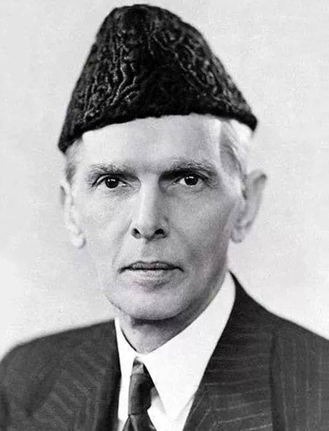
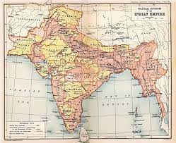
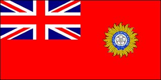

Pakistan is a country located in south asia and is the 5th most populas country and the 33rd largest country in world .Muhammad Ali Jinnah or A.K.A Quaid e Azam was the founder of Pakistan . Pakistan is made up of 4 provinces Sindh Punjab, Balochistan, K.P.K .Pakistan has the 2nd most muslim population too, Paksitan is 96% muslim 2% christan and 1% hindu.Pakistan boders 4 countries which are India,Afghanistan,Iran and China. Pakistan's capital city is Islamabad which was constructed in the 1960s but before it was karachi. Karachi was the old capital of pakistan from 1947-1967.Pakistan got its independence in August 14th 1947 from The Great Britain Or known as The UK. Pakistan before 1947 was called British Raj from 1858-1947.Because of British Raj coming to pakistan,Now english is one of their official languages. Here is more to British Raj
↓ If you want to find out more about quaid e Azzam here is a link
More About Quaid E AzzamThe British Raj is Constitutional monarchy that was under the british crown in the indian subcontinent that was founded in 1858 and dissolved in 1947. After 1947 the British Raj was split/partitioned into 2 new countries: Republic of India and islamic Republic of pakistan. The British raj stretched from pakistan all the way to burma/myanmar. The British Raj was first known as the East India Company and then later converted to the British Raj 1874
 This is the map and flag of the British Raj (1858-1947)
Here is more to Pakistan